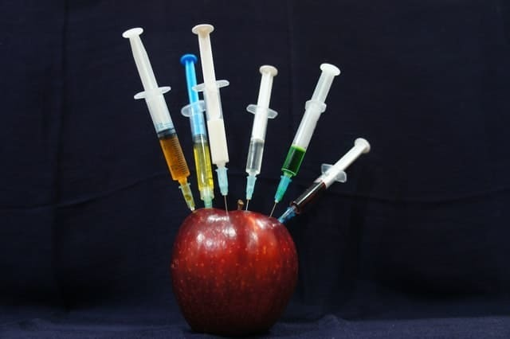

イソ吉草酸血症の鍼灸
先天的な酵素異常で有害なイソ吉草酸が蓄積する希少な代謝異常症です。専門医での食事管理・早期点滴を最優先とし、安定期の体調を穏やかに支えます。
まず知っておきたい要点と改善の流れ
イソ吉草酸血症は、生まれつきイソ吉草酸（イソバレリルCoA）を代謝する酵素の働きが遺伝子変異により不足し、体内に有害な有機酸が蓄積して代謝機能不全を起こす常染色体劣性遺伝性の指定難病です。日本では約50万人に1人と希少で、多くは新生児マススクリーニングで発見されます。感染症や手術、絶食などのストレスを契機に嘔吐や意識障害、神経障害などが急速に悪化する恐れがあるため、専門医による食事療法と早期のブドウ糖点滴が不可欠です。（公式解説）
このようなお悩みはありませんか？
- ✓風邪などで食事がとれないときやストレス時に体調が急激に悪化しやすい
- ✓嘔吐や強いだるさ、意識の変化などの代謝発作に気をつけている
- ✓筋肉の緊張異常や手足の振戦、運動のしにくさが気になる
- ✓毎日の食事管理と定期検査を続けながら、安定期の体の緊張を和らげたい
当院の施術アプローチ・改善の流れ
なぜ鍼灸で改善へ向かうのか？（作用機序の図解）
イソ吉草酸血症に対する鍼灸は、心拍変動・血管トーンを整える自律神経サポート機序を通じて、お体本来の回復力を引き出します。

循環器専門医の標準治療を絶対前提とし、手首や背部の安全な経穴へ低刺激でアプローチします。
心臓への過剰な交感神経刺激を穏やかに鎮め、心拍リズムと血管緊張の急変を抑えます。
ストレスで固まりやすい胸郭や横隔膜の緊張を解き、酸素摂取とリラックス反応を促します。
内服管理を厳守しながら、疲労やストレスが引き金となる症状不安の軽減を支えます。
院長YouTube解説・関連動画
イソ吉草酸血症の症状は、嘔吐や意識障害、運動機能障害など
イソ吉草酸血症の症状は、代謝機能不全によって起こります。主に現れる症状は、嘔吐や意識障害、運動機能障害などです。
特にアンモニアなどの毒素が体に増えると脳に悪い影響が出ます。そのため、大きな後遺症が残ることもあります。
イソ吉草酸血症には、症状の程度が重い重症型と、比較的程度が軽い慢性間歇型があります。
重症型の場合は生まれてすぐからたくさんのイソ吉草酸が体にたまるため、嘔吐や意識障害が現れます。場合によっては、出血しやすくなったり感染しやすくなったりします。
慢性間歇型では、風邪などによって十分な食事が取れなくなった時、突然イソ吉草酸が増え、嘔吐などの症状が現れます。
これは、食事の量が減ると、タンパク質からエネルギーを作る働きをしているイソ吉草酸を処理する代謝経路に負担がかかり、酵素が役割を果たせなくなるために起こります。
しかし、慢性間歇型では重症型のような症状が出ることはあまりありません。
イソ吉草酸血症は希少な遺伝子の病気で、代謝障害により体内にイソ吉草酸が蓄積します。この病態により、幅広い症状が引き起こされます。これらの症状は、出生直後から数年後までの間に様々な形で現れることがあります。以下に、その主な症状について詳しく説明します。
新生児期の症状
新生児におけるイソ吉草酸血症の典型的な症状は、吐き気、嘔吐、発熱、そして食欲不振です。これらの症状はしばしば誤解されがちですが、その他の一般的な新生児の問題と区別するために、より具体的な症状が見られることがあります。これには、非常に特異的な体臭（「汗が甘栗のような匂いを放つ」）や、ヘパトメガリー（肝臓の腫大）が含まれます。
神経学的症状
イソ吉草酸血症の子供たちは、しばしば神経学的な問題を示します。これには、異常な筋肉の緊張（低筋力または高筋力）、手足の振戦、発作、知的障害、そして運動の問題（歩行困難など）が含まれます。
生理的な症状
身体的な成長の遅れ、頻繁な感染症、肝臓の問題（肝臓の腫大や肝機能障害）、視覚問題、そして耳の問題（難聴など）もイソ吉草酸血症の一部の患者で見られます。また、特にストレスのある期間（例えば病気や手術後など）には症状が急速に悪化することがあります。
行動的な症状
イソ吉草酸血症の子供たちは、しばしば行動上の問題を示すことがあります。これには、自閉症スペクトラム障害の特徴である社会的相互作用の困難、非定型的な遊びパターン、ステレオタイプな行動、そして言語発達の遅れなどが含まれます。
代謝症状
イソ吉草酸血症は代謝障害の一部であるため、特定の生理学的マーカーが変動します。これらは通常、血液テストや尿で確認できます。具体的には、体内のイソ吉草酸レベルが異常に高くなります。また、特定のアミノ酸やオルガン酸のレベルも異常になることがあります。
長期的な症状
長期的に見て、イソ吉草酸血症は身体の成長と発達に影響を与え、結果として身長や体重の増加が遅れることがあります。また、免疫系の機能低下により、慢性的な感染症に見舞われることがあります。
以上のように、イソ吉草酸血症の症状は多岐にわたり、症状の重度も人により大きく異なります。

イソ吉草酸血症の改善方法は症状の程度によって違います。中でも生まれてすぐから重い症状が現れている場合は、血液の浄化やブドウ糖やカルニチンの静脈内投与などの特別な改善を行うことが必要になります。
症状が軽い場合は悪化して症状が現れることを防ぐために、特殊ミルクやカルニチン、グリシンなどを使うことが多いです。高タンパクの食品をとりすぎないようにすることも大事です。
症状が悪くなった場合、ブドウ糖の点滴を行うこともあります。
イソ吉草酸血症は遺伝的な代謝異常症であり、特定のアミノ酸であるロイシンの代謝異常によりイソ吉草酸が体内に蓄積します。根本的な改善方法はなく、症状の管理と体内のイソ吉草酸のレベルを制御することに重点が置かれます。
栄養管理
食事は、ロイシン（イソ吉草酸の前駆体となるアミノ酸）の摂取を制限することが一般的です。専門の栄養士が個々の栄養ニーズに応じてカスタマイズされた食事計画を提供します。食事は、必要なビタミン、ミネラル、そしてその他のアミノ酸を提供しながら、ロイシンの摂取を制限します。
ギ酸カルニチン（L-carnitine）は、イソ吉草酸の体外排出を促進し、その蓄積を減らすために使用されます。また、グリシンはイソ吉草酸と結合して、体外排出を促進する化合物を形成するため、この病気の改善にも使用されます。
緊急ケア
緊急時には、血中のイソ吉草酸レベルが急上昇する可能性があります。これは、特に感染症や手術といった体にストレスを与える事象の後に発生します。これらの状況では、体外から高カロリーの栄養素を供給し、アミノ酸の分解とイソ吉草酸の生成を最小限に抑えます。
長期的なフォローアップと監視
イソ吉草酸血症では定期的なチェックと血液テストを受ける必要があります。これにより、症状の進行と改善の効果を監視することができます。状態や症状により、適応した改善方法や栄養管理が必要となることがあります。
遺伝カウンセリング
イソ吉草酸血症は遺伝性の病気であり、親から子供に伝わる可能性があります。したがって、その家族は遺伝カウンセリングを受けることを強く推奨されます。カウンセラーは、遺伝性のリスク、将来の子供へのリスク、そして遺伝テストの選択肢について説明します。
新たな改善方法の開発
現在、遺伝子や酵素の補充など、新たな改善方法の開発が進行中です。これらの方法は、根本的な原因である遺伝子異常を対象とし、イソ吉草酸血症の根本的な改善方法を目指しています。ただし、これらの改善方法はまだ初期の研究段階にあり、一般的に使用されるまでには長い時間が必要となるでしょう。
イソ吉草酸血症は希少な病気であり、本人やその家族にとっては困難な状況を生じさせます。しかし、専門的なチームと協力すれば、生活の質を改善し、症状を管理することが可能です。
イソ吉草酸血症を改善するためには、毎日の生活で食事の内容に注意してきちんと改善を続けることが大事です。
風邪などで食事がとれない時はすぐに病院に行き、ブドウ糖点滴を受けましょう。定期的に病院で血液を調べたり、他の病気などで手術を受ける時はイソ吉草酸血症であることを伝えたりすることも大事です。
イソ吉草酸血症の改善例
イソ吉草酸血症とその家族は、この遺伝性の病気と向き合うために、さまざまな改善方法と生活スタイルの調整を行っています。ここでは、ある子供のイソ吉草酸血症に対する実際の例を紹介します。
4歳の男の子、小林くんは、生後数週間でイソ吉草酸血症と判断されました。彼は退院後すぐに、一般的な新生児スクリーニングの結果としてこの病気を知りました。
栄養管理
最初に取り組んだ改善方法は、小林くんの食事の調整でした。専門の栄養士は彼の成長と発育に必要な栄養素を提供しながら、ロイシンの摂取を制限する食事計画を提案しました。この食事プランは、彼の体重と活動レベルに合わせて定期的に調整されます。
小林くんは、イソ吉草酸の体外排出を促進するために、ギ酸カルニチンを毎日服用しています。また、彼はグリシンも服用しており、これはイソ吉草酸と結合して体外排出を促進します。
緊急ケア
小林くんが風邪をひいたとき、彼の体内のイソ吉草酸のレベルが上昇しました。このような状況では、高カロリーの栄養素を体外から供給し、イソ吉草酸の生成を抑制しました。これは通常、静脈栄養によって行われます。
長期的なフォローアップと監視
小林くんは定期的にチェックと血液テストを受けています。これにより、彼の症状の進行と改善の効果を監視しています。
遺伝カウンセリング
小林くんの家族は遺伝カウンセリングを受けています。カウンセラーは、彼の兄弟や将来の子供へのリスクについて説明しました。これにより、家族は遺伝的なリスクを理解し、将来的な選択肢を考慮することができました。
社会的サポート
小林くんの家族は、同じを抱える他の家族やサポートグループと接触しました。これにより、彼らは情報交換や経験の共有、そして感情的な支援を受けることができました。
学校でのサポート
小林くんが学校に通うようになったとき、彼の学校は特別な食事計画や緊急時の対応計画を理解しました。学校のスタッフは、彼が必要とする特別な配慮を理解し、彼が安全で健康的な学校生活を送ることができるようにサポートしました。
新たな改善方法の追求
小林くんの家族は、新たな改善方法の開発についても積極的に学んでいます。彼らは遺伝子や酵素の補充についての最新の研究を追っており、可能ならそれらの改善方法を試すことを検討しています。

循環器・動悸・高血圧・心不全補助の全身ツボ図解
実際の施術ではお一人おひとりの体質・症状に合わせて選穴しますが、動悸・不整脈・本態性高血圧・慢性心不全の循環器治療併用サポートの臨床でよく用いられる代表的なツボの目安です。

📌 代表的なツボの詳細一覧表を開く（6穴） ▼
| ツボ名 | 位置の目安 | 主な狙い | セルフケアの注意点 |
|---|---|---|---|
| 内関（ないかん） | 手首の横ジワから指3本分肘寄りの中央 | 動悸・不整脈・狭心症補助で最も研究されている心包経の要穴 | 胸痛・冷や汗・失神がある場合は直ちに救急受診してください。 |
| 膻中（だんちゅう） | 胸の中央（胸骨上） | 胸のつかえ・交感神経の高ぶり・不安感の鎮静 | 強く押さず手のひらで温めながら深呼吸します。 |
| 神門（しんもん） | 手首の横ジワの小指側のくぼみ | 心拍の落ち着き・緊張性の動悸と不眠ケア | ペースメーカー使用時は電気鍼を避け手技のみで行います。 |
| 曲池（きょくち） | 肘を曲げた外側のシワの先端 | 血圧変動に伴う上肢・頭部の緊張緩和 | 降圧薬・心不全薬の自己判断での中止は厳禁です。 |
| 足三里（あしさんり） | 膝の下外側、指4本分下 | 末梢循環・自律神経バランスとQOL維持 | 身体負担の少ない穏やかな低刺激で行います。 |
| 太衝（たいしょう） | 足の甲、親指と人差し指の骨の間 | ストレス性の血圧上昇・末梢血管収縮の緩和 | 就寝前の優しい指圧でリラックスを促します。 |
国際査読論文の科学的エビデンス
国際的な医学データベース（PubMed・Cochrane等）で報告されている動悸・不整脈・本態性高血圧・慢性心不全の循環器治療併用サポート領域の代表的な査読済み鍼灸研究をまとめています（標準治療との併用や研究上の限界を含めて正確に掲載）。
📚 査読論文データ・PubMed出典リンクを開く（4件） ▼
| 年・研究デザイン | 対象・規模 | 主な結果 | 限界・出典 |
|---|---|---|---|
| 2019年 大規模多施設RCT | 慢性安定狭心症 398名解析（標準薬物療法併用） | 16週時点の4週間発作減少は実鍼群がシャム群比5.18回・待機群比5.63回多く有意改善（P<0.001）。 | 標準薬物療法への併用（補完）試験であり単独療法ではない。 JAMA Intern Med (PMID: 31355870) |
| 2007年 シャム対照RCT | 本態性高血圧 140名完了（ドイツ・24時間ABPM） | 治療終了時の24時間血圧はシャム比SBP -6.4mmHg・DBP -3.7mmHg有意低下（P<0.001）。 | 終了3〜6か月で治療前水準へ戻るため継続ケアが必要。 Circulation (PMID: 17548730) |
| 2015年 メタ解析 | 高血圧 23 RCTs（n=1,788） | 降圧薬＋実鍼は降圧薬＋シャム比でSBP -7.47mmHg・DBP -4.22mmHg有意低下。鍼単独は降圧薬と同等・根拠不十分。 | 盲検化・異質性に課題。降圧薬の自己中断は厳禁。 PLoS One (PMID: 26207806) |
| 2025年 メタ解析 | 心拍変動（HRV）10 RCTs（n=744） | 自律神経全体の適応指標SDNNを有意に改善、重篤な有害事象なし。 | LF・HFには不確実性が高くさらなる検証が必要。 Front Neurosci (PMID: 41230507) |
参考文献・出典
- 銀座そうぜん鍼灸院「イソ吉草酸血症の公式解説ページ」
- 2019年 大規模多施設RCT（慢性安定狭心症 398名解析（標準薬物療法併用））— JAMA Intern Med (PMID: 31355870)
- 2007年 シャム対照RCT（本態性高血圧 140名完了（ドイツ・24時間ABPM））— Circulation (PMID: 17548730)
- 2015年 メタ解析（高血圧 23 RCTs（n=1,788））— PLoS One (PMID: 26207806)
- 2025年 メタ解析（心拍変動（HRV）10 RCTs（n=744））— Front Neurosci (PMID: 41230507)
よくある質問（FAQ）
Q. 風邪をひいて食欲がないときに、体調回復のため鍼灸を受けてもよいですか？▼
Q. 状態が安定している時期に、筋肉の張りやリラックス目的で相談できますか？▼
あわせて読まれる関連疾患（循環器のお悩み）
特定のアミノ酸代謝酵素の異常により中枢神経障害を起こす指定難病です。専門医の食事・薬物管理が最優先で、安定期の筋緊張等を穏やかにケアします。
先天的な代謝酵素異常でメチルマロン酸が蓄積する指定難病です。専門医の食事・薬物管理を最優先に、安定期の穏やかな体調ケアを行います。
好酸球の異常増加により全身の細い血管に炎症が生じる指定難病です。専門医の長期治療を最優先とし、寛解・安定期のしびれや緊張を穏やかにケアします。
原因不明の慢性炎症と複数リンパ節の腫脹を特徴とする指定難病です。専門医の薬物治療と感染予防を最優先に、安定期の体調ケアを補完します。
腎臓や肺・神経などの小型血管に炎症が起こる指定難病です。ステロイド・免疫抑制治療を最優先とし、寛解・安定期の体調管理を補完的に支えます。
電子伝達フラビン蛋白の異常で脂肪酸代謝が障害される指定難病です。食事間隔の厳守と専門医管理が最優先で、安定期の筋疲労等を穏やかにケアします。
おひとりで悩まず、まずはご相談ください
銀座本院・川口・大宮・横浜・博多・田無の各院でご予約を承っております。